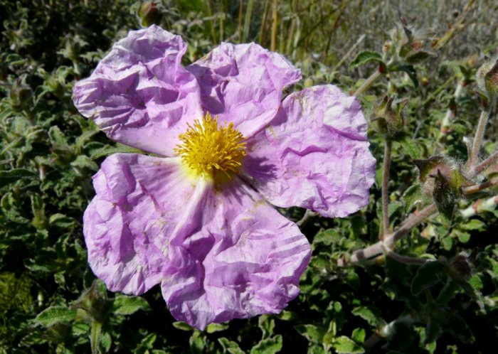
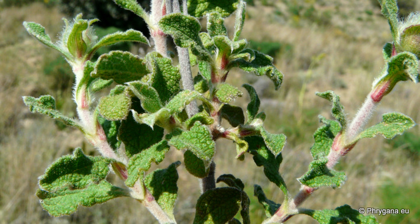
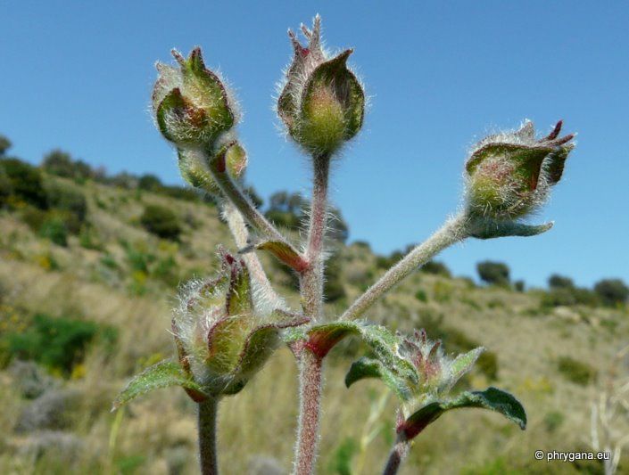
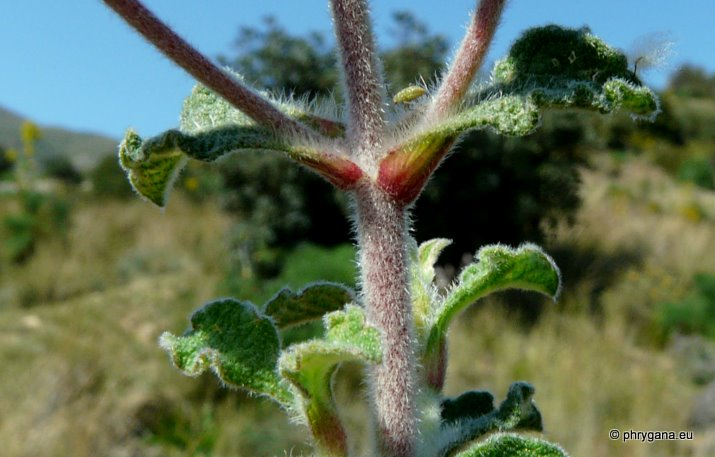
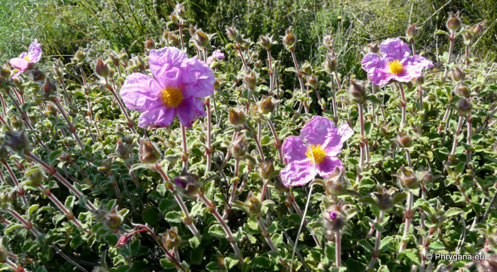
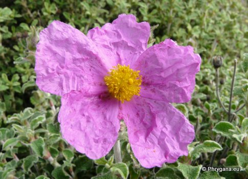
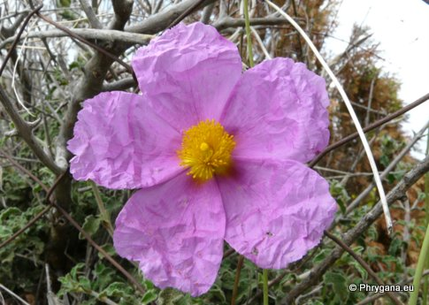
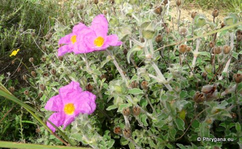
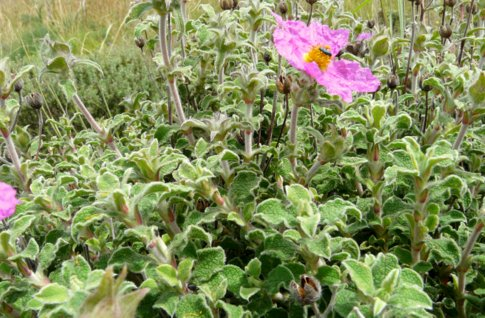

| PHRYGANA | Fauna | Flora | Galles | liste des espèces |
contact -
info - commentaires phrygana1 (at) gmail.com |
| Particularités crétoises | nouveautés | Mines | ressources naturelles |
| Cistus creticus subsp. eriocephalus (VIV.) GREUTER & BURDET |
| 264 | Flora | CISTACEAE | Cistus L. |
|
 Cistus creticus subsp. eriocephalus Melambes (Agios Giorgos) 23 mars 2011 |
| Arbuste ramifié. | |
| Feuilles: elliptiques (15 -25 (-50) x 8 - 15 5-30) mm, vert glauque grisâtre, légèrement collantes et avec peu de glandes; marges plus ou moins lisses | |
| Tige poilue (longs poils blancs) | |
| Fleurs: couronne rose vif, 20 - 30 mm; pétales froissés; étamines et style d'égale longueur, jaune vif; sépales ovales-pointus; pédoncule et calice souvent couverts de poils blancs | |
| Fruit: une capsule à 5 loges, contenant des graines lisses | |
| Hauteur: 30 - 120 cm | Type biologique: chaméphyte frutescent |
| Floraison: janvier février mars avril mai | |
| Altitudes: 0 - 1200 m | |
| Statut en Crète: indigène | |
| Biotopes en Crète: phrygana, garrigue, lieux rocailleux secs, maquis, forêts dégradées | |
| Distribution: région Méditerranéenne (centrale et orientale),Proche-Orient, Crimée, Afrique du Nord | |
| Note: plante héliophile | |
|
 Cistus creticus subsp. eriocephalus Melambes (Agios Giorgos) 23 mars 2011 |
|
 Cistus creticus subsp. eriocephalus Melambes (Agios Giorgos) 23 mars 2011 |
|
 Cistus creticus subsp. eriocephalus Melambes (Agios Giorgos) 23 mars 2011 |
|
 Cistus creticus subsp. eriocephalus Melambes (Agios Giorgos) 23 mars 2011 |
|

 Cistus creticus subsp. eriocephalus Melambes (Agios Giorgos) 7 mars 2010 |
|

 Cistus creticus subsp. eriocephalus Melambes (Agios Giorgos) 7 mars 2010 |
| 10 juin 2013 |
| © paul fontaine -- © Phrygana.eu 2007 -- 2013 |